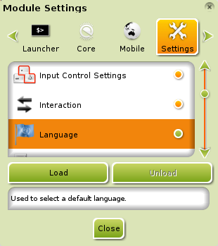
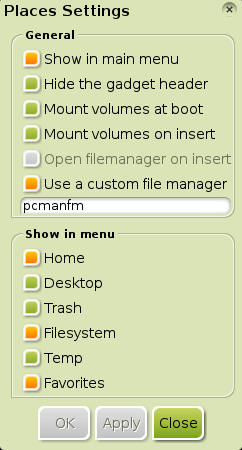
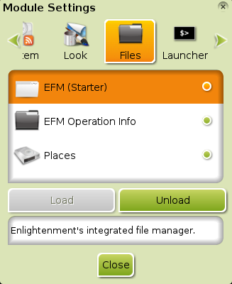
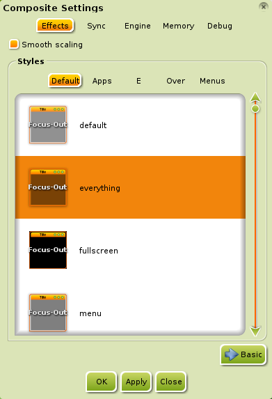
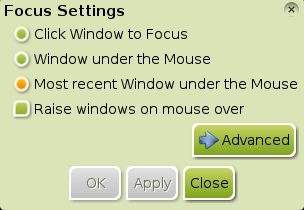

[clique em qualquer imagem para aumentar]
Alguns dos novos usuários do Bodhi Linux parece que têem as mesmas questões, por isso aqui estão as respostas a algumas delas:
Porque são instaladas tão poucas aplicações?
Parte da filosofia do Bodhi Linux é o minimalismo e a possibilidade de escolha pelo utilizador.
Achamos que os nossos utilizadores são suficientemente inteligentes para escolherem as aplicações
que querem, e nós proporcionamos um método fácil e intuitivo de o fazer através do Bodhi Linux
AppCenter. Também achamos que é melhor e mais fácil para o utilizador que
ele construa o sistema que ele quer desde o início, em vez de
ter de remover muitas aplicações que não quer e/ou não necessita e então
ter de instalar as que quer e/ou necessita.
Como instalo a minha linguagem no Bodhi Linux?
{kind=link}
É uma simples operação assumindo que já instalou o seu pacote de linguagem, como descrito
aqui.
Primeiro, verifique que o Módulo Idioma está carregado.
Pode ver isto em Principal>Definições>Módulos e depois no diálogo Definições,
navegar até à aba Definições, vá descendo até encontrar a opção Idioma e selecione-a. Se o botão Descarregar
estiver inactivo, então o Módulo não foi carregado. Se é este o caso, clique no botão Carregar para carregá-lo.
Agora navegue até Principal>Definições>Tudo>Idioma>Definições de idioma. Aqui, selecione o pacote de linguagem que
você instalou e clique em OK.
{kind=link}
{kind=link}
Alguns utilizadores poderão ter de navegar até Principal>Definições>Tudo> Idioma>Definições do método de introdução,
selecione "Não utilizar métodos de introdução", de seguida selecione ibus, clique
"Configura método selecionado", e, finalmente, clique em Aplicar para executar a mudança de idioma.
Para completar a operação vá a Principal> Enlightenment>Reiniciar.
E está tudo!!!
Nota:As imagens mostradas do dialógo Definições de idioma são da pós instalação do pacote Francês bodhi-language-fr,
como exemplificado na página Instalando o Software.
Como posso mudar o layout do meu teclado?
Primeiro verifique que o Módulo Teclado está carregado.
Para isso vá a Principal>Definições>Módulos em seguida selecione a aba Utilitários
e vá descendo até encontrar a opção Teclado. Clique na opção e se o botão Descarregar
está inactivo, então o Módulo não está carregado. Se é este o caso, clique no botão Carregar para carregá-lo.
Agora, navegue até Principal>Definições>Tudo>Entrada>Teclado.
Clique no botão Adicionar no diálogo Definições do teclado.
Aqui, selecione o layout do teclado desejado e clique em Aceitar para adicionar o layout às suas configurações.
Agora que foi adicionado, clique no layout para o mover para o topo com o botão Subir, e
depois em Aceitar para utilizar o novo layout!
Nota: Assim que o Módulo Teclado estiver carregado, pode adicionar o Gadget Teclado
num Painel na sua área de trabalho. Uma funcionalidade extremamente conveniente para os
"furiosos e compulsivos trocadores de teclado"!
Onde estão os ícones da área de trabalho?
Desde o lançamento do Bodhi 2.1.0, os Ícones da área de trabalho estão habilitados por defeito, graças à
decisão tomada sobre o facto do Enlightenment File Manager (EFM) ser o gestor de ficheiros por defeito.
EFM suporta ícones na área de trabalho através do Enlightenment (e17).
É possível adicionar ficheiros e lançadores à área de trabalho movendo os
ficheiros/lançadores para a pasta da área de trabalho localizada no seu directório (home directory).
Simples!
Se desejar, pode desabilitar a visualização de ícones na área de trabalho em
Principal>Tudo>Ficheiros>Gestor de ficheiros, na aba Exibição.
Como substituo o EFM por outro Gestor de ficheiros?

{kind=link}
Não é necessário remover ou substituir o EFM para utilizar outro gestor de ficheiros (GF) ou atribuir outro GF como Gestor de Ficheiros por defeito:
-
Para utilizar outro Gestor de Ficheiros (GF), install o GF desejado
e utilize a respectiva entrada em Aplicações ou o lançador
(a.k.a. desktop-file) quando desejar utilizá-lo.
- Para atribuir a utilização por defeito a outro Gestor de Ficheiros, navegue até Principal>Definições>Tudo>Aplicações>Aplicações padrão. Aí, selecione "Ficheiro" da secção esquerda, em "Aplicações padrão", e desça pela secção direita, em "Aplicações padrão", até encontrar o Gestor de ficheiros pretendido. (Assumindo que já efectuou a instalação do Gestor de ficheiros pretendido.) Depois de selecioná-lo, clique em Aplicar e em seguida Aceitar.
Para remover o EFM e a sua entrada de menu Explorar..., veja a questão abaixo.
Em relação a "substituir o EFM", assumimos que se refere a atribuir à opção
Explorar... do menu a outro Gestor de Ficheiros. Isto não é possível mas o
Enlightenment (e17) oferecece um Módulo alternativo que pode ser atribuido a qualquer outro Gestor de Ficheiros! É chamado de
Locais e é instalado por defeito. Para carregar o Módulo,
vá a Principal> Definições> Módulos.
Nas abas do topo, mova-se para a direita até encontrar a aba Ficheiros. Aqui,
seleccione Locais e clique no botão "Carregar". Agora, para associar o Gestor de Ficheiros pretendido, vá a
Principal>Definições>Tudo>Ficheiros>Locais e seleccione
Utilizar um gestor de ficheiros personalizado. Digite o comando para executar o Gestor de Ficheiros na janela. Clique em Aplicar.
Depois em Aceitar. Feito!!!
Como remover/desinstalar o EFM?

{kind=link}
A opção de "remover o EFM" resume-se a descarregar o Módulo EFM (Starter) pois não pode ser desinstalado porque está integrado no próprio Enlightenment (e17). Para descarregar o Módulo, vá a Principal>Definições>Módulos. Nas abas do topo, mova-se para a direita até encontrar a aba Ficheiros. Aqui, seleccione EFM (Starter) and clique no botão "Descarregar". O Módulo está desabilitado e não pode ser utilizado; note que esta operação também remove a opção Explorar... do menu Principal e tudo o que dependa do EFM, como os ícones da área de trabalho.
Porque o Bodhi Linux usa o navegador "Midori Web Browser"?
{kind=link}
Quando questionámos os nossos utilizadores sobre qual o navegador que deveria ser instalado por defeito, descobrimos que existia um empate entre 3 versões de navegadores: o Firefox, uma versão antiga do Firefox e o Chromium. Assim, em vez de escolher um navedador que deixaria 2/3 dos nossos utilizadores insatisfeitos e com a necessidade de instalar outro navegador, fomos numa direcção totalmente diferente: escolhemos o Midori!
Midori tem a vantagem de ser extremamente leve mas, ao mesmo tempo, extremamente funcional, como pretendido pela filosofia do Bodhi Linux (ver a primeira questão). Midori também tem a funcionalidade de instalar aplicações directamente do nosso Bodhi Linux AppCenter, una funcionalidade que falta nos outros navegadores.
Como desabilitar as "janelas saltitantes"?

{kind=link}
Os utilizadores que usam o Módulo Composição fazem esta pergunta com frequência.
Para desabilitar este efeito, vá a Principal>Definições>Tudo>Aparência>Composição.
Clique em "Avançado". Na parte inferior da janela seleccione qualquer outra opção
em vez da por defeito, clique em Aplicar e as "janelas saltitantes" já não saltitam mais.
Porque temos de clicar na barra de titulo para trazer a janela para a frente?

{kind=link}
Isto é conhecido como "Foco do ponteiro" ("Pointer Focus") e é o método de de focagem existente nas áreas de trabalho do UNIX desde sempre. É, também, a escolha do criadores do Enlightenment, assim como o Bodhi Linux escolheu respeitar as suas decisões em relação ao seu comportamento por defeito.
De ter em atenção que a janela em foco, e que está a receber os inputs das teclas, não é necessáriamente a janela que está no topo das outras janelas.
Reconhecemos que muitos utilizadores não estão acostumados com este comportamento das janelas, mas ele é fácilmente configurável para o utilizador. Vá a Principal>Definições>Tudo>Janelas>Foco. Aqui seleccione a opção pretendida, clique em Aplicar e em seguida em Fechar.
O "Foco de Ponteiro" pode ser um método muito produtivo, por isso: faça um teste!
Mais informação...
Existe um FAQ apropriado no O Doc Wiki FAQ do Bodhi Linux. É sempre um "trabalho em progresso" e pode ser editável por qualquer utilizador. Dito isto, se tiver alguma pergunta ou resposta que deva ser adicionada ao FAQ, sinta-se à vontade para o fazer!